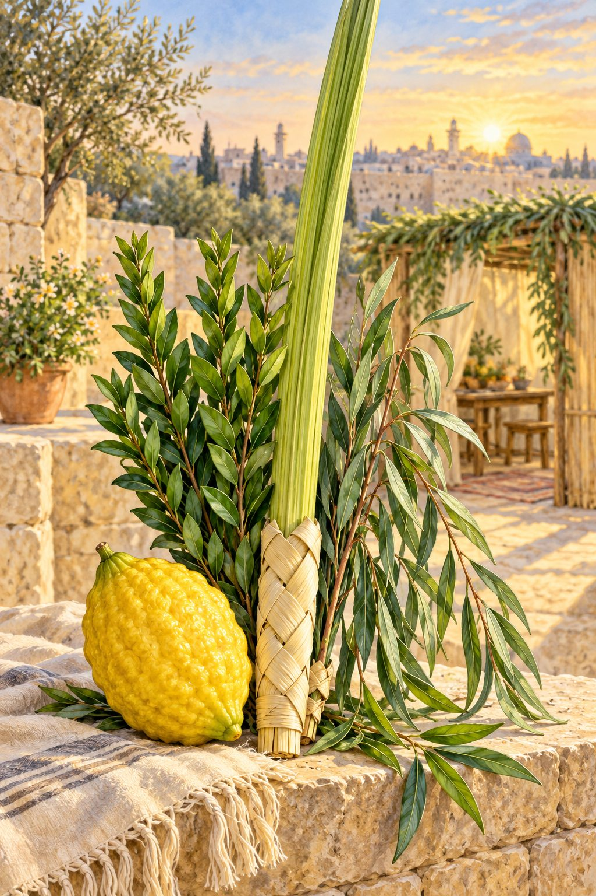
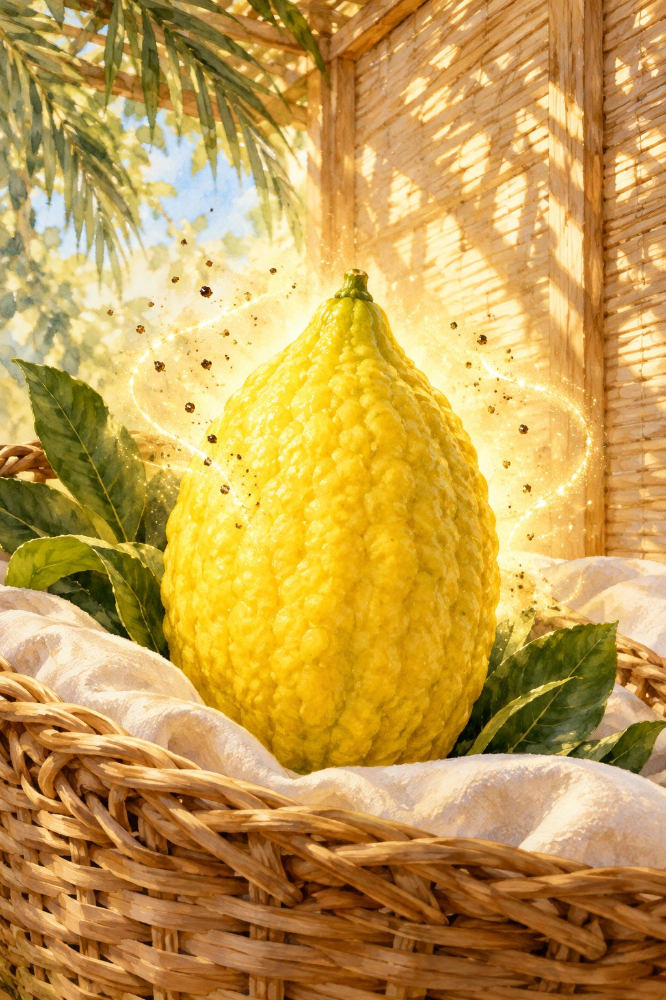
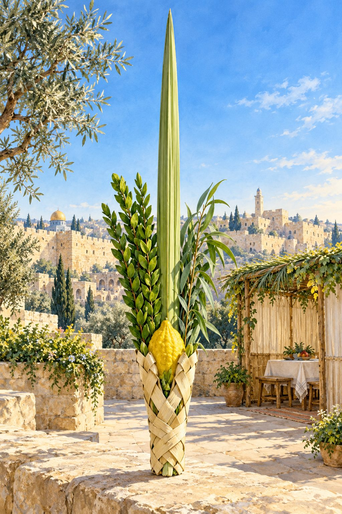
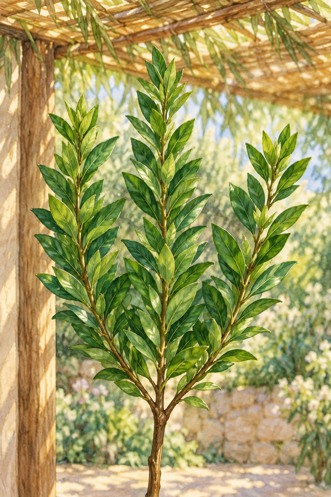
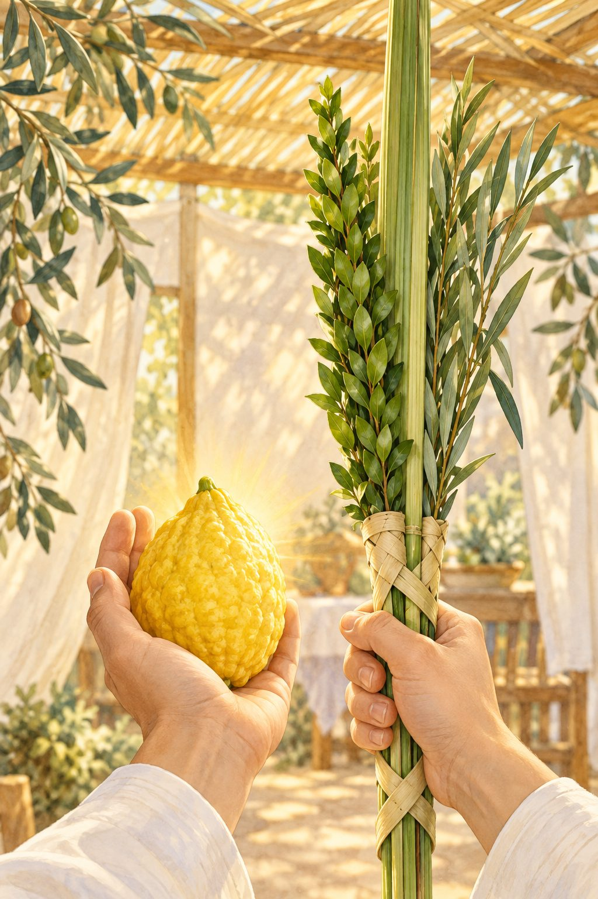
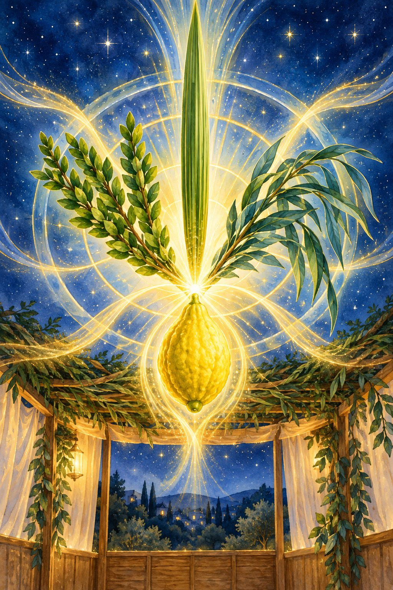
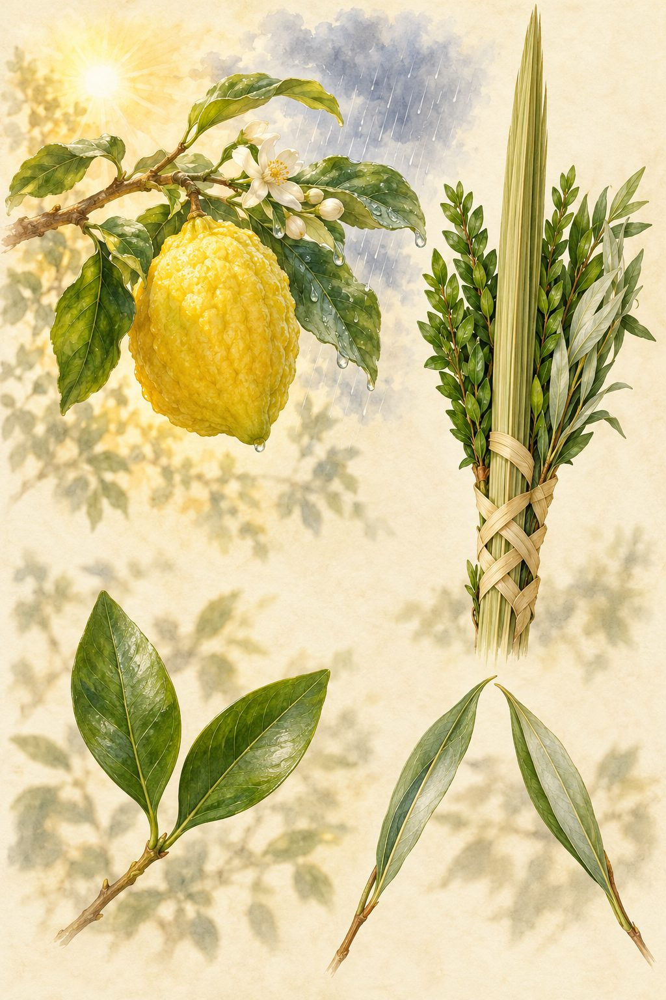
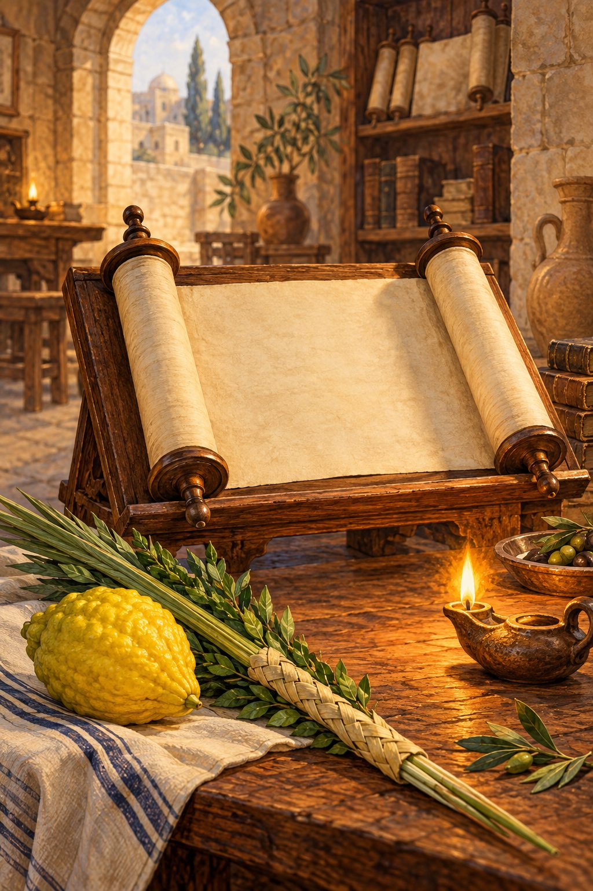
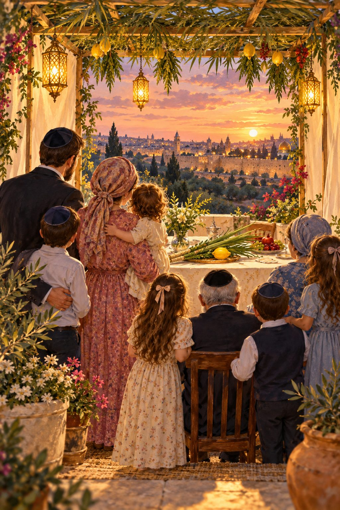

ארבעת המינים אינם ארבעה דברים נפרדים שנקנו יחד – הם מצווה אחת שאם חסר בה מין אחד, כל המצווה חסרה. כך אומרת ההלכה: מעכבין זה את זה.

ההלכה שארבעת המינים מעכבים זה את זה מלמדת שבשביל שיהיה משפחה צריך שיהיה איש ואשה, בן ובת – וזה מעכב, לפי שכך נבנית משפחה – ראשי התיבות ״לפ"ו״ (לפריה ורביה).
בפרקים הבאים נעבור מין אחר מין, ונראה כיצד הלכותיו – מה כשר, מה פסול ומה מהודר – רומזות לחיי הבית, למידות ולעבודת ה'. זהו הדרוש: לא במקום הפשט וההלכה, אלא על גביהם.
הפסוק ״ולקחתם לכם״ מלמד שהאתרוג צריך להיות שלך, לשמחתך ולהנאתך. כך האדם צריך לשמוח ולהנות מאשתו – וזה מקשר מאוד.

התורה אמרה במפורש: ״פרי עץ הדר״. זו חובה גדולה: להקפיד כל יום להתבונן בדברים הטובים שבאשתו, במעלותיה הנפלאות – ולפאר אותם, לומר אותם לאשתו.
מה שה' יצר שהאשה זקוקה למחמאות – הוא כדי לעזור לבעל להתרגל להסתכל כמה דברים טובים יש באשתו, וכך לשבחה. וגם: אתרוג ״הדר״ – רמז לאשה שצריכה להיות יפה בעיני בעלה.
מלמד על החיבור של האם בישראל לגזע עם ישראל: רק לפי האם קובעים אם הילדים יהיו יהודים, כי היא מחוברת לגזע. ואולי גם לכך רומז שהארון היה מעצי שיטים.
עץ האתרוג הוא היחיד שיש לו פיטם לפירותיו. מסתבר שזה רומז לכך שלאשה יש האפשרות להמשיך את זרע ישראל לדורות – וזה רומז לשדי האשה, משם היא מאכילה וממשיכה את הדורות הבאים.
ובאמת האתרוג דומה מאוד לשדי אשה, ועיין בב"י שמדמה שדי אשה לאתרוג. וחסדי שמים שזיכני לזה.
״וזה שנאמר ׳זממה שדה ותקחהו׳ – שדה אשר ברכו ה' – זה שדה של תפוחים (כמו שאמרו בתענית כט ע"ב: ׳חקל תפוחין קדישין׳), ׳מפרי כפיה נטעה כרם׳ – על דרך מה שנאמר ׳כי כרם ה' צבאות בית ישראל׳ וגו'. תפוחים – זה אתרוג, עיין בספר ברכת מועדיך.״
ספר פרי צדיק – פרשת שמיני, אות והלולב בולט מעל כולם – הוא ראש המשפחה. והוא כנגד השדרה (חינוך): כמו הבעל שהוא עמוד השדרה – נותן כוח לכולם בבית.

ללולב יש חץ לכיוון השמים – הבעל צריך להחדיר אמונה בה' בבית, ולהראות לכולם את הדרך.
| ההלכה | הרמז לעבודת ה' ולחיי הבית |
|---|---|
| נחלקה התיומת | צריך להיות לב אחד לאביו שבשמים. |
| נסדק כהימנק | אין חיבור לאביו שבשמים. |
| פסול ביום הראשון | לפחות בבוקר, כשאדם קם – שיהיה כולו לאביו שבשמים. |
| יבש | צריך תמיד להתרענן ולא להיות יבש – ״לא המתים יהללו י־ה״. כמה צריך האדם לחדש את עצמו, ולאהוב את רעייתו ולהתבונן בדברים הטובים שבה. |
| טפח אחד מעל כולם | כמו הבעל שצריך להיות טפח מעל כולם – להראות לכולם את הדרך. |
| כפוף – כשר, ואף מהודר | לוותר ולהיכנע בפני אחרים – מעולה. |
| עקום | אין לו לב לכיוון אביו שבשמים. |
ויש לנו מצווה לקרב את האתרוג ללולב שיהיו מחוברים יחד – זה מלמד אותנו את החיוב הגדול להתאחד עם בתו של המלך.
ההדס הוא הילדה – כמו הדסה (אסתר המלכה).

הבת צריכה להיות בבית עם ההורים, מכבדת אותם – ושיהיה לה קן אחד.
זו הצניעות – כל המהות שלה.
הצניעות חשובה כל כך, שאפילו אם חסר קצת בראש ההדס – הוא כשר.
❓ הקושיה
יש דין שאסור לקחת את הלולב והאתרוג ביד אחת (שו"ע תרנ"א סעיף ב'). מה סוד העניין? לכאורה הדבר מוזר: ארבעת המינים אמורים להיות אגודה אחת, ואף על פי כן מי שאוגד את הלולב עם האתרוג – יש דעות שפוסלות, וצריך שיהיו בנפרד. לכאורה זה היפך השלום!

יש חושבים ששלום בית יהיה אם האשה תעשה את תפקיד האיש. באה התורה ואמרה: האתרוג אסור לו להיות ביד ימין – הוא ביד שמאל. האשה מכירה בכך שתפקידה הוא יד שמאל – להיות עזר לבעלה.
האתרוג הוא הפרי החשוב ביותר מכולם – התורה כתבה אותו ראשון, ויש בו טעם וריח – ועם זאת הוא ביד שמאל. כך האשה עוזרת לבעלה ולבניה ללמוד תורה, וגדולה ההבטחה שהבטיח ה' לנשים יותר מלאנשים, והשכינה שורה בבית בזכות האשה.
אבל אם האתרוג הולך ליד ימין – אם האשה הולכת לתפקיד האיש – זה פסול, שכן שלמות היא שכל אחד עומד על מקומו הנכון לו, שבראו בוראו.
ועיין בפרק "מן המקורות" – האלשיך על ״שמאלו תחת לראשי״עד כמה חשוב איגוד המינים? עד שמעיקר הדין היה אפשר לברך עליו ״שהחיינו״, ואם בירך בדיעבד – יצא. כל מסורת התורה היא כאשר הבן והבת מכבדים את האב ולומדים ממנו תורה, כמו שכתבו הראשונים במצוות כיבוד אב. וזו אחת הסיבות שהלולב צריך להיות גבוה מכולם – שיהיה האור בבית.
מעבר לרמז על המשפחה, ארבעת המינים רומזים לארבע אותיות שם הוי"ה. כך כותב בעל באר מים חיים:

כי הנה נודע אשר כל דבר ודבר הנעשה בארץ כן נעשה דוגמתו בשמי השמים בעליונים להרע או להיטיב, וזה כל עיקר תורה ותפלה ומצות ה', כי כאשר מיחד אדם שם ה' בדברים הגשמיים התחתונים כמו ארבע מינים שבלולב הרומזים לארבע אותיות שם הוי"ה הקדוש והטהור, וכשאדם לוקחן לשם מצות ה' באהבה ויראה בכדי לעשות נחת רוח ליוצרו, אז כשם שהוא מקרב כל הארבעה מינים הללו אחד אל אחד והיו לאחדים בידו – כן מתיחדים ומתקשרים ארבע אותיות שם הוי"ה הקדוש לאחד ביחודא שלים, ואז נמשך כל בחינת שפע וברכה מדעת עליון לנוה אפריון, למכון בית אלהינו, כי אין הברכה שורה כי אם על דבר שלם. וחס ושלום כשאותיות הוי"ה הם בפרודא – לא תוכל לשרות הברכה עליהם ממקור עליון… וזה כל מעשינו ועבודתינו: ליחד שמא דקודשא בריך הוא ושכינתיה, ליחד שם י"ה בו"ה ביחודא שלים, בכדי שיוכל להשפיע הברכה ולברך לעולמות העליונים ותחתונים על ידי זה. וכן בתפילין וציצית – כולם רמוזים לשמותיו הקדושים ברוך הוא, ובפרט לשם הוי"ה… והיודע אופן הרמוז בהם ומכוון בהם לשם ה' – גורם בזה יחוד קודשא בריך הוא ושכינתא, והכל מתברכין על ידו.
ספר באר מים חיים – פרשת יתרו, פרק ככשם שהאיש והאשה, הבן והבת מתאחדים בבית – כך מתאחדות אותיות השם. הבית השלם הוא דוגמה למעלה. ״אין הברכה שורה כי אם על דבר שלם״.
שמעתי מאבי מורי ששמע: ארבעת המינים רומזים על האיחוד. ידוע שיש אחד שיש בו טעם ואין בו ריח וכו'. ויש להקשות עדיין: למה נלקח דווקא אתרוג? הרי יש הרבה דברים שיש בהם טעם וריח, וכן הרבה מינים שיש בהם ריח וכו'?
בארבעת המינים יש דבר מיוחד מאוד – כל אחד בעצמו רומז על האיחוד:

גדל גם בחורף וגם בקיץ – חיבור בין זמנים.
הוא כפות – עלים כפופים וקשורים זה בזה.
יוצאים שלושה מקן אחד – ענפים מגזע אחד.
בתרגום נקראת ״אחוותא״ – אחווה.
בפרק זה מובאים במלואם המקורות שעליהם נשען הדרוש, כדי שהקורא יוכל לעיין בהם בעצמו.

לפי בחינת הימים נוראים ראוי שיהיה לנו אתרוג נאה. כי אמרי אנשי: ׳כל נער יש לו אשה נאה׳. והאתרוג הוא בחינת אשה, כמו שכתוב בזהר (תקונים יג, כא) שהאתרוג הוא בחינת (שיר השירים ד, ז): ״כולך יפה רעיתי ומום אין בך״. ובימים נוראים ישראל הם בבחינת נער, כי אז הם בבחינת ״והנה נער בוכה״ (שמות ב, ו), מיד: ״ותחמל עליו״, כמו שכתוב בתקונים (תקון יא), ועל כן ראוי שיהיה לישראל אתרוג נאה.
ומי שבוכה ביותר ונכנס ביותר בבחינת ״נער בוכה״ ראוי שיהיה לו אתרוג נאה ביותר.
כי זה שאומרים העולם שכל נער יש לו אשה נאה, זה יש להבין. כי עיקר השכל הוא מהמוח. והמוח שואב ממוח שבעצמות, שהוא נשקה על ידי לחות ושמנונית הגוף בבחינת (איוב כא, כד): ״ומוח עצמותיו ישוקה״. כי על ידי לחות ושמנונית הגוף נשקה המוח שבעצמות, וזהו עיקר קיום השכל. ועל כן מי שהוא נער ואין שכלו בשלמות, ונשאר מוחו כנוס בעצמות, כי אין שואב מוחו ממוח שבעצמות ומחמת זה אין שכלו בשלמות – נמצא שנשאר המוח כנוס בעצמות. ועל כן בת זוגו שנלקחה מן העצמות, כמו שנאמר: ״ויקח אחת מצלעותיו״ וכו' (בראשית ב, כא), נמשך אליה רבוי המוח שנשאר כנוס בעצמותיו אשר משם נלקחה. ועל כן בת זוגו נאה, כי עיקר היופי על ידי המוח והחכמה בבחינת: ״חכמת אדם תאיר פניו״ (קהלת ח, א).
ובקדושה זה בחינת שנמשכים שרשי הדעת אל האתרוג, ועיין בכוונות (שער הכוונות, סוכה ה) סוד אתרוג ולולב, עיין שם.
וזה בחינת סוכה: כי ״נער ישראל ואהבהו״ (הושע יא, א). אהבה – זה בחינת ימין, בחינת חבוק יד ימין, בחינת סוכה. וזה נעשה על ידי בחינת נער ישראל, בחינת נער בוכה כנזכר לעיל.
ספר שיחות מוהר"ן – אות פזסגולה להתמדה, שיזכה להיות מתמיד בלימודו, הוא להיזהר לבלי לדבר על שום איש ישראלי. כמו כשהכלה היא יפה אזי האהבה בשלמות, אבל כשיש להכלה איזה חסרון ומום – אזי בוודאי אין האהבה בשלמות. כמו כן התורה נקראת כלה, כמו שכתוב (דברים לג, ד): ״תורה צוה לנו משה מורשה״, ודרשו רבותינו זכרונם לברכה (ברכות נז.; פסחים מט:): ״אל תקרי מורשה אלא מאורסה״. וכל אחד מישראל יש לו אות בתורה, כי ששים רבוא אותיות התורה כנגד ששים רבוא נשמות ישראל. וכשיש חסרון באחד מישראל – נמצא שיש חסרון בתורה, ששם שורש נשמות ישראל. ועל כן בוודאי אי אפשר לאהוב את התורה בשלמות. אבל כשיזהר מלדבר על שום ישראל ולבלי למצוא שום חסרון בשום ישראלי – נמצא שאין בתורה שום חסרון ומום, אזי בוודאי יאהב את התורה מאוד, ואזי יתמיד בלימוד התורה מגודל האהבה.
וזהו ״תורת ה' תמימה״ (תהלים יט, ח) – היינו כשתורת ה' היא תמימה בלי שום חסרון ומום, דהיינו כשנזהרים לבלי לדבר ולבלי למצוא שום חסרון בשום ישראלי שהוא אות מהתורה, נמצא שאז תורת ה' תמימה בלי שום חסרון ומום, אזי היא ״משיבת נפש״. כי אז דווקא זוכים לאהבת התורה ומרגישים טעם מתיקות התורה שמשיבה את הנפש, מאחר שאין בה שום חסרון. ואז זוכים להתמדה.
ספר שיחות מוהר"ן – אות קצבכשם שאדם צריך שלא לראות מום באשתו – כך צריך שלא לראות מום בשום איש ישראל. הראייה הטובה מביאה אהבה שלמה, ואהבה שלמה מביאה התמדה.
״שנים מהם עושים פירות ושנים מהם אין עושים פירות״. נראה לי בס"ד: העושים פירות הם לולב ואתרוג, שהם אחד אחד, כי בעלי תורה ובעלי מצוות שעושים פירות – יש להם לב אחד. לכן ראשי תיבות לולב אתרוג – ל"א, ראשי תיבות ״לב אחד״. ואותם שאין עושים פירות הם שניים ושלושה, כי יש להם כמה לבבות, שניים ושלוש. וראשי תיבות ערבה הדס – ע"ה, ראשי תיבות ״עם הארץ״, וסופי תיבות ה"ס, לשון שתיקה, שאין פיהם פתוח בדברי תורה.
גם לולב כנגד בעלי תורה, ואתרוג כנגד בעלי מצוות; לכן לולב גבוה מכולם, כי תלמוד תורה גדולה מכולם. והדס כנגד הבטלים מדברי תורה, וערבה כנגד הבטלים ממצוות.
גם עוד תפס כנגד צדיקים – שני מינין: לולב כנגד אנשים ואתרוג כנגד נשים; וכן בהפך תפס: הדס כנגד אנשים וערבה כנגד נשים.
ספר בניהו בן יהוידע – מנחות דף כז ע"אלולב = הבעל, אתרוג = האשה, הדס = הבת, ערבה = הבן. משפחה שלמה בארבעה מינים.
לולב ואתרוג כנגד אנשים ונשים (וכן בהפך: הדס כנגד אנשים וערבה כנגד נשים), ובמדרגות אחרות: בעלי תורה, בעלי מצוות והבטלים מהם.
אלו שני מישורים של דרוש שאינם סותרים זה את זה: האחד רואה במינים את חלקי הבית, והשני את דרגות האדם בעבודת ה'.
״שמאלו תחת לראשי״ – וזה יאמר ״תחת לראשי״, כלומר: שמאלו הוא לי כהסבת שמאל שהיא תחת לראשי, כלומר לתועלת הראש ולתומכה, כעניין ״שבטך ומשענתך״ (תהלים כג, ד), כי שבט היסורין הוא משענת לראש. וזולת זה, ״וימינו וגו'״ – כי ימין מקרבת כמדובר.
פירוש האלשיך – שושנת העמקים על שיר השירים, פרק ב פסוק ו